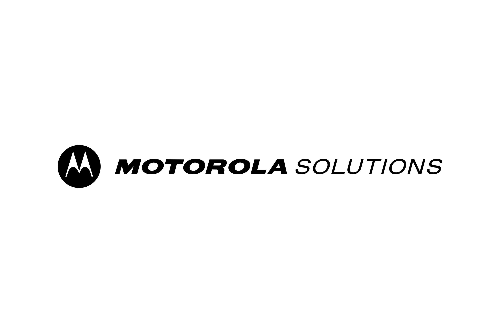

Motorola Solutions -- Software Engineer
Summer 2023
Created a platform-agnostic desktop application in Electron to display the tasks of a dump file retrieved from Motorola APX Next radios.
Deployment of the application allowed it to replace its outdated succesor written in Perl which saved the licensing expenses for its Enterprise edition.
Read more
Here I was able to explore a Electron and learn to use it for the first time. With my prior knowledge in Angular, it was a very small learning curve that allowed me to
quickly begin to piece together the application. By the end, the application was identical to its predecessor and very responsive.
Read Less
Motorola Solutions -- Embedded Systems Engineer
Summer 2022
I innovated a software module which interacted with RF components in a radio to collect and perform data analytics
with digital signal processing.
Designed a graphical user interface with Python, Matplot, and Tkinter to seamlessly present
vistual data to customers.
Read More
This internship allowed me to be creative and bring in a lot of prior knowledge from my other courses such as
statistics and data structures. Due to the hardware constraints of the project, I ultimately had to find a way
to capture hours of RF activity without eating memory and with subpar processing power. More details on this
project can be found in below in the projects section.
Read Less
Motorola Solutions -- Full Stack Developer
Spring 2022
Independently developed the candidate and main application pages on Recruiting Reimagined using Angular.
Collaborated in a team of four to bring the registration phase of the application to the production stage.
Read More
This project ultimately gave me the experience to create single page, dynamic web applications. Angular
is also the tool I opted for using in creating this portfolio webpage. Following this internship, I continued to learning Angular
and other aspects of a full stack project such as creating an API script from scratch and connecting an application to a backend
database. I am currently working on a full stack web application with two other peers and the progress thus far
will be posted soon under the projects section.
Read Less
Motorola Solutions -- Backend Developer
Summer 2021
Improved the backend database of the Application Status Portal project using MySQL.
Produced a robust script using Python to automate raw data organization in the database.
Read More
This internship gave me exposure to databases which I never had up until this point. Besides from working with
new technologies, I also began to become familiar with how to work in an agile work environment with fellow
employees, as well as using corporation tools such as Jira and Confluence. One interesting aspect about this internship is that the full-time software engineers we worked
with were based in Krakow, Poland, so I quickly learned how essential communication was considering the time zone differences.
It led me to becoming more prepared to come to them with questions I had with the Application Status Portal database, and their encouragement
is what led me to learn Python for the first time to interact with the database. I ultimately created a backend script that used the MySQL API to help automate
the process of organizing newly collected data on the statuses of Motorola's online services, and organizing them
by region.
Read Less
Mechatronics (SE 423)
Spring 2023
The core of this class is to teach the computer interfacing of physical devices, data acquisition, real time programming, and human-machine interfaces. In addition to lecture,
the course offered a semester project which focused on a robot equipped with a variety of sensors (MPU, camera, ladar, IMU, OptiTrack motion capture system), and a servo motor based cage
with a goal of navigating an obstacle course to retrieve golf balls. The final project for my group was a success and provided a great hands-on experience learning experience. More
information about our project can be found online at this website link.
Control Systems (ECE 486)
Spring 2023
This course covers the design, modelling, and analysis of control systems with modern design principes. The laboratory focused on modeling and creating a controller to balance
a pendulum by designing a PID controller that sent the appropiate current to a rotor attached to the end of the pendulum.
Embedded DSP Labratory (ECE 420)
Spring 2023
A labroratory class with a focus on developing real-time digital signal processing systems on an Android tablet. Topics ranged from audio-sampling, FIR/IIR filters,
digital modulation for communications, and processing of audio, image, and video signals. The final project gave the liberty to students to apply any topic from the
class or from a research paper onto the Android tablet.
Read More
Besides solidfying my expertise with digital signal processing, this class allowed me to explore algorithms from a real-time perspective and served as a venue to apply
a personal project that I had begun before the start of the semester. I devised a spoken digit recognition model that was trained offline and run on the Android tablet. More
information about this project can be found below in the projects section.
Read Less
Embedded Systems (CS 431)
Spring 2023
The course focus is into embedded architecture and the key concepts found in common embedded system applications. Divided into a lecture and lab component, the lectures focused on
core concepts such as signal processing and control, time critical I/O handling, data communication, real time operating systems, and more. The lab component provided the opportunity to program
a biped robot so that it could it balance itself whilst simultaneously follow a set of waypoints.
Read More
This class was a ground basis for learning more into embedded architecture and programming for micro controllers. The microcontroller onboard the biped robot was as ESP32-Wrover. The final project entailed tagging on additional features on top of the aforementioned lab goals.
In my case, I created an Android application using MIT App Inventor that could communicate with the robot via Bluetooth to send commands and receive data points in order to create a local trajectory map of the robot.
Read Less
Principles of Safe Autonomy (ECE 484)
Fall 2022
This class dives into the process and algorithms of designing autonomous systems where we get to use tools such as ROS, Gazebo, and OpenCV. Some of the main topics
covered in the class include path planning, particle filtering, lane detection, and safety verification. Read More
For the final project, we are given the opportunity to program an autonomous car here on campus and my goal is tackle a project that handles lane detection in
rough weather conditions.
Read Less
Applied Parallel Programming (ECE 408)
Fall 2022
In this course we have learned how to program processors that have massive computing resources. By learning how to parallelize operations such as convolutions
and matrix mulitplications while also taking into consideration the hardware capabilities of modern GPU's offered by NVIDIA and AMD, we are able to increase
the computational efficiency of many programs. Read MoreThe projects are done in C and using the CUDA system. This class thus far has been one of my favorites since
it helped me gain an understanding of how GPU's are able to massively increase the computational power of many computers, especially areas of programming that need
that kind of computational ability such as machine learning programs.
Read Less
Artificial Intelligence (CS 440)
Fall 2022
This class is an introduction to many conecpts and techniques in AI, and covers methods used in search, classification, reasoning, and machine learning.
Thus far, we have had one project that involved using Naive Bays to classify documents based on the words in the given document. Read More
Given a training set and some labels, I created a bag of words model to determine on a test set whether or not a document was giving
a postive or negative review for a movie. In order to increase the accuracy of the model, I included a mixture of unigrams and bigram words as well
as a filter to remove stop words such as 'the, of, a, etc.' which led me to finding an accuracy as high as 91% on some test sets.
Read Less
Computer Architecture (ECE 411)
Fall 2022
This course covers the fundamentals of computer architecture at the ISA and microarchitecture level, to deepen our understanding of computer systems.
Alongside instruction, the course has mp's that are done using Verilog and Verdi is used to synthesis and debug our projects. Read More
As for the projects in this class, so far I have had to verify hardware components such as a multiplier and a FIFO module. I have also had to implement
the rv32i instruction set of the RISC-V processor which so far has been my favorite project. The final project in the class is designing and implementing a complete
out of order processor.
Read Less
Computer Systems Engineering (ECE 391)
Spring 2022
The prime goal of this class was to get students familiar with the design decisions and the implementation of Linux Kernel. Through this class,
I learned key concepts when developing a kernel such as how to organize a file system, displaying data through a VGA port in ModeX, configuring virtual memory, and how to implement a scheduler
so that a kernel can contain multiple tabs running programs simultaneously. Read MoreThere were three mp's (mini projects) for this class where the first was in x86
assembly and the last two were in C. The third mp was by far the biggest, taking up the second half of the semester, and with a group of four, we developed a basic
linux kernel with the aforementioned concepts such as a file system, virtual memory, paging, and a scheduler.
Read Less
Digital Systems Labratory (ECE 385)
Fall 2021
The core focus of this class was getting us familiar with FPGA boards and simulation synthesis with the assistance of Intel's Quartus. For hardware synthesis, we used System Verilog.
In this class, we had a variety of mp's that involved configuring the FPGA to receive keyboard input and display to a monitor using a VGA port.
I also became familiar with istantiating memory on an FPGA board and designing finite state machines for components on the FPGA board that needed to be
communicated with over multiple clock cycles such as the SDRAM. Read MoreMy biggest key takeaway from this class was learning how to debug hardware
by analyzing waveform signals, and following close instructions to given documentation and timing requirements for components like the
aforementioned SDRAM.
This class had a final project where we were allowed to freely demonstrate our skills and knowledge of FPGA synthesis by implmeenting
whatever we wanted, and our grade was based on the difficulty of our implementation. With a fellow peer, we created a hybrid of a Flappy Bird and
Google's infamous, no-internet dinosaur game. This required us to set up communication between the FPGA and a keyboard and monitor, as well as
using SDRAM to hold image frames of the game. The final project was a success, and the last thing we wish we could have set up was
the onboard sound card on the FPGA so that there could be sound and music to go along with the game.
Read Less
Introduction to Data Structures and Algorithms (CS 225)
Spring 2021
Here I learned how to analyze the complexity and runtime of various algorithms, and how to solve major paradigms using
methods such as recursive programming, divide and conquer algorithms, dynamic programming, greedy algorithms,
and graph algorithms. Read More
For my final project, I worked with three peers to create a program that was able to handle a massively large data set of nearly 8,000 airports and all of their established routes
in 2018, and use that information to find the shortest distance to any other airport from the same data set. In order to do this, we utilized Djikstra's algorithm and found the distance
between every pair of airports. We also implemented a strongly connected components algorithm in to find which airports in the data had redundant paths among each other. The github link
to this project can be found here.
Read Less
VEXU Robotics -- Controls/Vision Programmer
Fall 2022 - Now
VEXU is a university level robotic competition where the tasks for a university's robots are different each year. For the current school year,
the challenge is placing as many disks as possible in the opponents corner before the timer runs out. There is also a skills portion where a robot
needs to make as many disks into a hoop as possible.
Read More
We are creating three robots, two for the main competitions, and one for the skills competition. My responsibility as a programmer is to
write the controls for the robot to enable autonomous and man operated movement. For vission, we are using a Raspberry PI and external camera to
identify the field and yellow disks so that for the autonomous portion, the robots are able to collect their disks and place them at their destination.
I'm most excited for contributing to the vision of the robots since the Artificial Intelligence and especially my Principles of Safe Autonomy course are
extremely relevant for computer vision and autonomous operations. Seeing this overlap between my courses and RSO project brings me a lot of energy since it makes
me realize the potential we have of creating a robust robot that can place in the VEXU competition.
Read Less
Illini Solar Car -- Mechanical Engineer & Co-Treasurer
August 2021 - May 2022
This RSO resembles a start up in the sense that we are responsible for our own funding from the school as well as sponsors,
and there are various divisions in the team from business, to marketing, to mechanical and electrical engineering.
Designed and 3D printed crucial components of the car such as the intake plug and battery box mounts using Creo.
Organized the monthly expenses using QuickBooks and revised team purchase requests.
Read More
That is no typo, I was a mechanical engineer for Illini Solar Car. My prime motivation was that I wanted to gain experience
that I knew I would never encounter in my courses, and I saw Illini Solar as the perfect opportunity to do so. Even now, I've gained a lot of
opportunities in my college career to expand my technical knowledge and it's such an enjoyable experience diving into something new.
Thanks to Solar Car, I learned basic CAD programming with Creo, and what it meant to collaboratively work with fellow engineers to
reach an end goal.
Read Less
Society of Hispanic Engineers -- Software Engineer
January 2021 - May 2021
Led the software sub team to enable movement of a mechanical hand in response to keyboard input to translate American Sign Language. Created code base in C for the Arduino board and motors attached to the hand.
Read More
By this point, I had finally become familiar with C/C++ and was happy to be able to use those skills in practice by working with a
mechanically printed hand. As the lead of the software team for the semester, I hosted meetings twice a week and helped my fellow
peers catch up to speed with C/C++. Together, we sifted through Arduino documentation and it was always an amazing feeling seeing our progress
translate into a hand capable of moving and responding to keyboard input.
Read Less